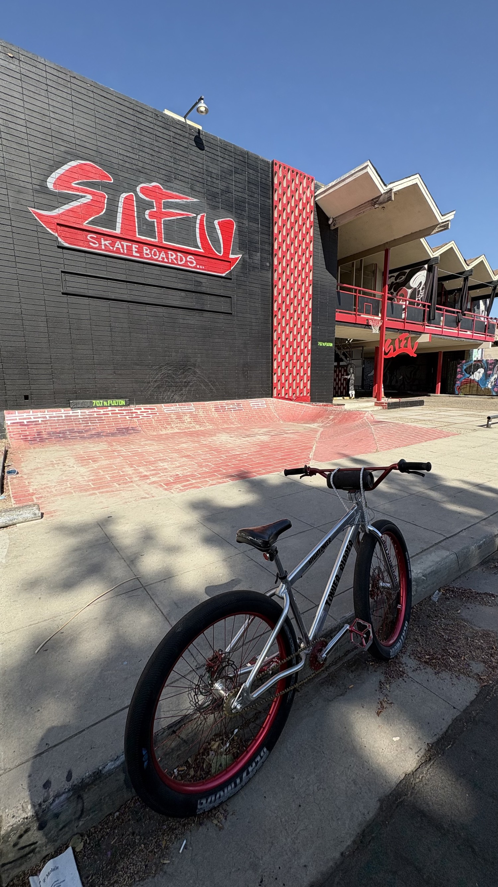
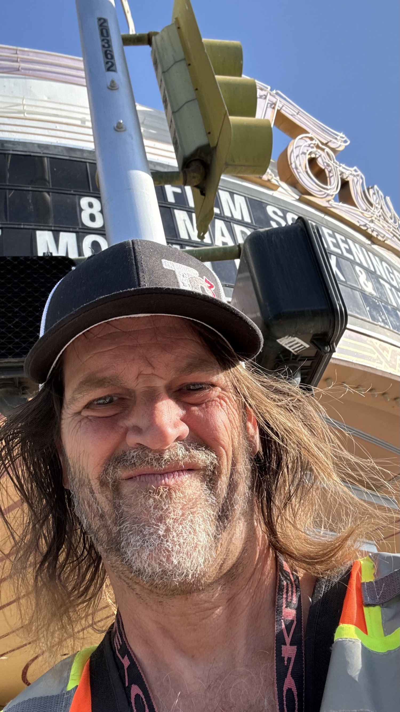
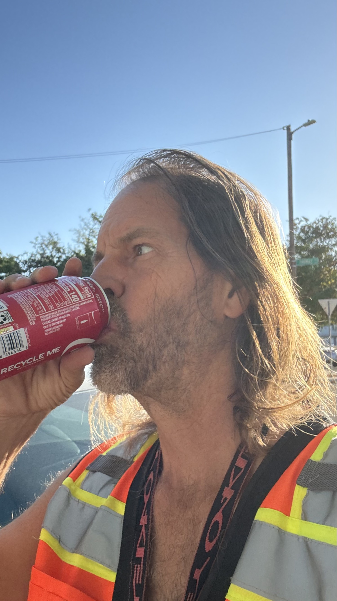
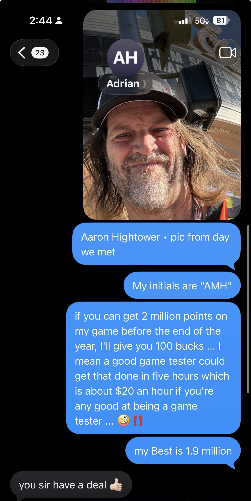

The first approach happened in front of SFU Skateboards at 707 N Fulton. Representatives of a nonprofit asked whether food was wanted and directed the location to the intersection of Van Ness and Belmont. That intersection is the place most locals know for open-air drug activity, hand-to-hand sales conducted in plain view, and the political tolerance that allows it to continue despite clear violations of health codes, safety codes, and the criminal law. In local terms it functions much like Kensington Boulevard: government funds flow, enforcement stays selective, and the street remains an active market.
Cool ranch Doritos, a twelve-ounce Coke, an egg-and-pinto-bean burrito, and a chorizo burrito changed hands. Conversation followed about religion, a 501(c), spiritual powers, and ethical standing. Then it turned toward software, systems, and the idea of high income that does not require credentials or institutional permission.

The Follow-Up Letter
After the sidewalk exchange, the proper next step is full context rather than partial impression. The letter below is offered so that every relevant fact sits in the open. No superiority is asserted. The record is simply placed where it can be read without distortion.

Places We Are Both Known to Be
These are the real frames from the day and the neighborhood. The same man who accepted a game-testing challenge, the same streets, the same Tower District landmarks where further meetings are possible.


The Direct Exchange Continues
After the meeting, the conversation moved into a concrete challenge on the game itself. Two million points before year’s end for one hundred dollars. The reply was immediate and clear.

Ethical Clarity Without Performance
The spiritual and ethical implications that arose on the sidewalk are met with the same seriousness they were offered. The response is not a contest of moral rank. It is the decision to present the full record of work, education, patents, and design intent so that any further conversation begins from verified ground rather than rumor or partial view.
Texas A&M with honors. 3.72 overall, 3.9 in the major, 4.0 in the electrical engineering minor. President of Nanotech Gaming. Atari Games programmer on San Francisco Rush 2049. Patents on ultra-low latency wearable systems. Ongoing construction of CELLTOWER as a platform where earnings can be tied to demonstrated human skill under California law.
That is the ethical façade held high: transparency of record, invitation to continue, and no claim that the work is above anyone else’s. Only that it is real, documented, and available for inspection.
An Open Record
The skate shop on Fulton is where the approach occurred. Van Ness and Belmont is where the food was directed and where the open-air market continues under political protection. The letter, the photographs, and the challenge sit together so that the context is complete.
If the work of verified skill and fair reward overlaps with what is being built, or if further conversation is useful, the door remains open. No performance. Only the record and the invitation.